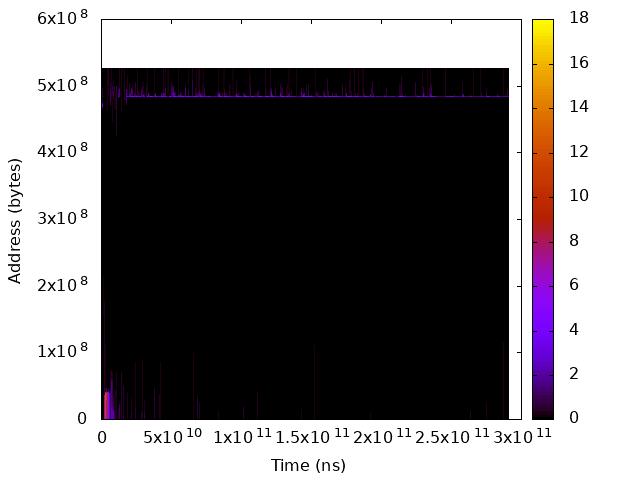
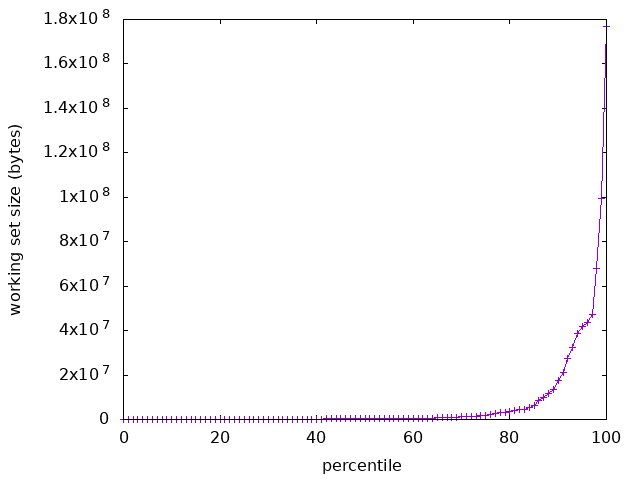
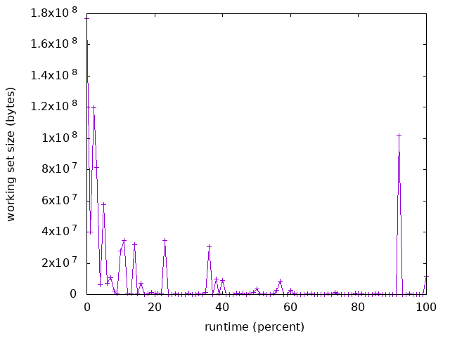
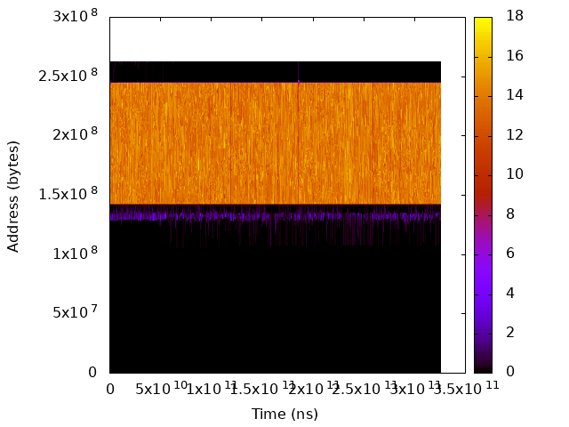
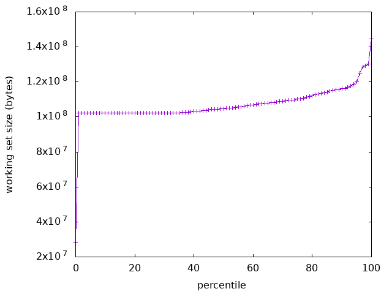
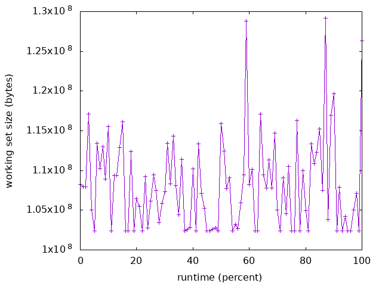

Optimization Guide¶
This document helps you estimating the amount of benefit that you could get from DAMON-based optimizations, and describes how you could achieve it. You are assumed to already read Getting Started.
Check The Signs¶
No optimization can provide same extent of benefit to every case. Therefore you should first guess how much improvements you could get using DAMON. If some of below conditions match your situation, you could consider using DAMON.
Low IPC and High Cache Miss Ratios. Low IPC means most of the CPU time is spent waiting for the completion of time-consuming operations such as memory access, while high cache miss ratios mean the caches don’t help it well. DAMON is not for cache level optimization, but DRAM level. However, improving DRAM management will also help this case by reducing the memory operation latency.
Memory Over-commitment and Unknown Users. If you are doing memory overcommitment and you cannot control every user of your system, a memory bank run could happen at any time. You can estimate when it will happen based on DAMON’s monitoring results and act earlier to avoid or deal better with the crisis.
Frequent Memory Pressure. Frequent memory pressure means your system has wrong configurations or memory hogs. DAMON will help you find the right configuration and/or the criminals.
Heterogeneous Memory System. If your system is utilizing memory devices that placed between DRAM and traditional hard disks, such as non-volatile memory or fast SSDs, DAMON could help you utilizing the devices more efficiently.
Profile¶
If you found some positive signals, you could start by profiling your workloads
using DAMON. Find major workloads on your systems and analyze their data
access pattern to find something wrong or can be improved. The DAMON user
space tool (damo) will be useful for this. You can get damo from
tools/damon/ directory in the DAMON development tree (damon/master
branch of https://github.com/sjp38/linux.git).
We recommend you to start from working set size distribution check using damo
report wss. If the distribution is ununiform or quite different from what
you estimated, you could consider Memory Configuration optimization.
Then, review the overall access pattern in heatmap form using damo report
heats. If it shows a simple pattern consists of a small number of memory
regions having high contrast of access temperature, you could consider manual
Program Modification.
If you still want to absorb more benefits, you should develop Personalized DAMON Application for your special case.
You don’t need to take only one approach among the above plans, but you could use multiple of the above approaches to maximize the benefit.
Optimize¶
If the profiling result also says it’s worth trying some optimization, you could consider below approaches. Note that some of the below approaches assume that your systems are configured with swap devices or other types of auxiliary memory so that you don’t strictly required to accommodate the whole working set in the main memory. Most of the detailed optimization should be made on your concrete understanding of your memory devices.
Memory Configuration¶
No more no less, DRAM should be large enough to accommodate only important working sets, because DRAM is highly performance critical but expensive and heavily consumes the power. However, knowing the size of the real important working sets is difficult. As a consequence, people usually equips unnecessarily large or too small DRAM. Many problems stem from such wrong configurations.
Using the working set size distribution report provided by damo report wss,
you can know the appropriate DRAM size for you. For example, roughly speaking,
if you worry about only 95 percentile latency, you don’t need to equip DRAM of
a size larger than 95 percentile working set size.
Let’s see a real example. Below are the heatmap and the working set size
distributions/changes of freqmine workload in PARSEC3 benchmark suite. The
working set size spikes up to 180 MiB, but keeps smaller than 50 MiB for more
than 95% of the time. Even though you give only 50 MiB of memory space to the
workload, it will work well for 95% of the time. Meanwhile, you can save the
130 MiB of memory space.

The access pattern in heatmap format.¶ |

The distribution of working set size.¶ |

The chronological changes of working set size.¶ |
Program Modification¶
If the data access pattern heatmap plotted by damo report heats is quite
simple so that you can understand how the things are going in the workload with
your human eye, you could manually optimize the memory management.
For example, suppose that the workload has two big memory object but only one
object is frequently accessed while the other one is only occasionally
accessed. Then, you could modify the program source code to keep the hot
object in the main memory by invoking mlock() or madvise() with
MADV_WILLNEED. Or, you could proactively evict the cold object using
madvise() with MADV_COLD or MADV_PAGEOUT. Using both together
would be also worthy.
A research work 1 using the mlock() achieved up to 2.55x performance
speedup.
Let’s see another realistic example access pattern for this kind of optimizations. Below are the visualized access patterns of streamcluster workload in PARSEC3 benchmark suite. We can easily identify the 100 MiB sized hot object.

The access pattern in heatmap format.¶ |

The distribution of working set size.¶ |

The chronological changes of working set size.¶ |
Personalized DAMON Application¶
Above approaches will work well for many general cases, but would not enough for some special cases.
If this is the case, it might be the time to forget the comfortable use of the user space tool and dive into the debugfs interface (refer to Detailed Usages for the detail) of DAMON. Using the interface, you can control the DAMON more flexibly. Therefore, you can write your personalized DAMON application that controls the monitoring via the debugfs interface, analyzes the result, and applies complex optimizations itself. Using this, you can make more creative and wise optimizations.
If you are a kernel space programmer, writing kernel space DAMON applications using the API (refer to the API Reference for more detail) would be an option.
Reference Practices¶
Referencing previously done successful practices could help you getting the sense for this kind of optimizations. There is an academic paper 1 reporting the visualized access pattern and manual Program Modification results for a number of realistic workloads. You can also get the visualized access patterns 3 4 5 and automated DAMON-based memory operations results for other realistic workloads that collected with latest version of DAMON 2 .
{kind=link}
{kind=link}
{kind=link}